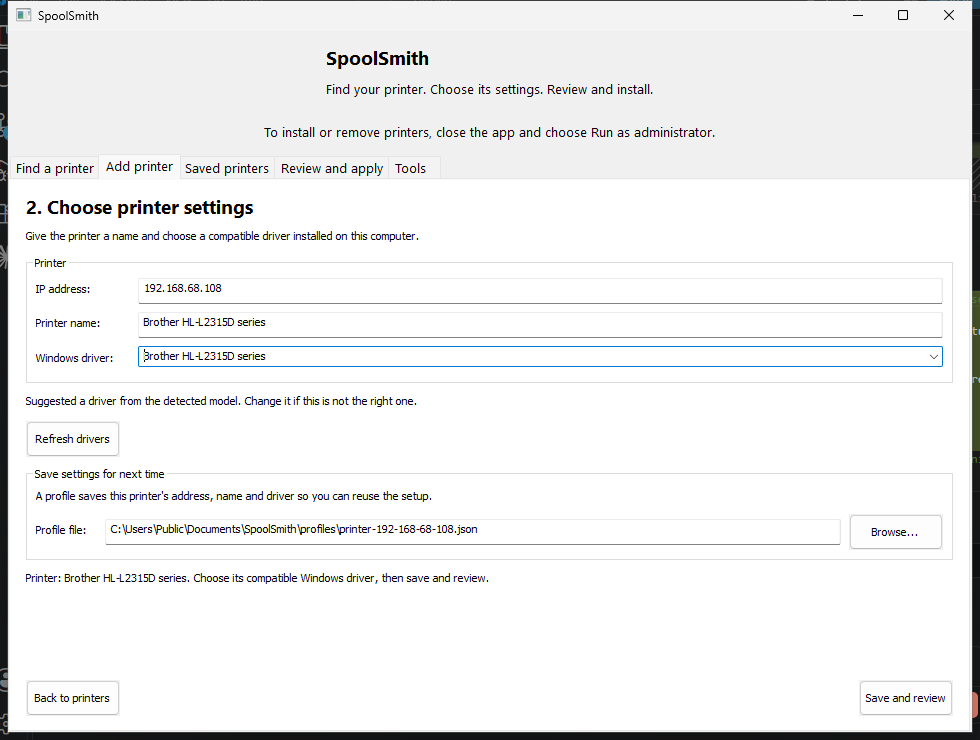
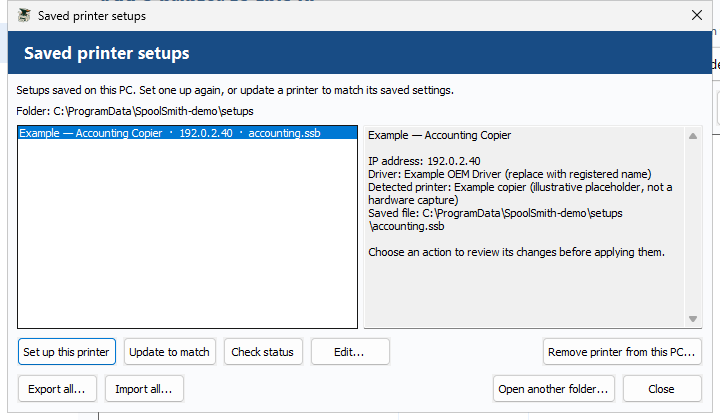

Workflow
Set up by address, and saved setups
When no PC has the printer yet, start from its address. Let Windows set up an IPP printer by itself, or pick an installed driver and capture the printer as a reusable .ssb file you can add, update, check or remove on any PC.
Find printers on the network#
The desktop's Add a printer page lists printers on the network the PC is connected to, scanned when the app starts. Scan a different network or IP... takes another subnet, or one address with Use IP directly. On the command line:
.\spoolsmith.exe discover 192.168.1.0/24
.\spoolsmith.exe inspect 192.168.1.50discover takes /24 through /32 and lists printer candidates. inspect shows what one address reports over SNMP, HTTP and PJL, and where each piece of evidence came from. Discovery doesn't cross VLANs or use multicast, and a candidate isn't a certified printer.

Let Windows set it up (IPP)#
For a printer that supports IPP, Windows can do the driver work. In the desktop, choose Windows automatic (IPP) in the driver picker. On the command line:
.\spoolsmith.exe add 192.168.1.50 --windows-driver --name "Office printer" --dry-run
.\spoolsmith.exe add 192.168.1.50 --windows-driver --name "Office printer"SpoolSmith first verifies the IPP endpoint and the model. Windows then creates the queue with Microsoft's inbox IPP Class Driver, and SpoolSmith asks Windows for the printer's own driver, in this order:
- a driver already registered under the printer's model name;
- one Windows can register by that name;
- exactly one matching printer driver from Windows Update.
If one is found, the queue switches to it, with the endpoint checked before and after; if the check fails, the class driver is put back. If Windows has nothing, the class driver stays. This step is limited to five minutes and never fails the setup. The plan shows the step and the model it will look up, but can't name the driver in advance, because Windows chooses it during setup. SpoolSmith itself downloads nothing.
A working IPP connection doesn't prove the driver suits the printer. Print a test page after setup. IPP discovery checks common paths on TCP 631; IPPS-only printers aren't supported yet.
To save this kind of setup for later, capture it with profile capture 192.168.1.50 office.ssb --name "Office printer" --windows-driver.
Use an installed driver#
For printers that need the manufacturer's driver, install it on the PC first, then get its exact registered name:
.\spoolsmith.exe driversChoose the driver because you know it works with this model. A similar model name or an AI-suggested driver name doesn't verify it; a printed page does.
New-Item -ItemType Directory -Force profiles
.\spoolsmith.exe profile capture 192.168.1.50 profiles\office.ssb `
--name "Office Printer" --driver "EXACT REGISTERED DRIVER NAME"Capture probes the printer, records what it reports, and writes a printer file. It never overwrites an existing file. In the desktop, choose the driver and Save and review.
Add, update and remove#
In an administrator PowerShell# Preview, then confirm
.\spoolsmith.exe add --profile profiles\office.ssb --dry-run
.\spoolsmith.exe add --profile profiles\office.ssb
# Change the saved settings, then update the queue to match
.\spoolsmith.exe profile edit profiles\office.ssb --driver "NEW REGISTERED DRIVER NAME"
.\spoolsmith.exe configure --profile profiles\office.ssb
# Remove the queue, keeping shared ports and drivers
.\spoolsmith.exe remove --profile profiles\office.ssbIn the desktop, open More → Saved setups and use Set up this printer, Update to match, Check status, Edit... or Remove printer from this PC... Open another folder... switches libraries.

Running it again is safe#
- Repeating
addwith matching settings changes nothing. If the queue exists with different settings, useconfigure. A conflicting port always stops. - Repeating
removeon a queue that's gone succeeds without changes. Shared ports and drivers are kept. remove --profilechecks the installed address and driver against the file first. To remove a differently configured queue, useuninstall "Queue name".- Renaming the queue in a file creates a new queue rather than renaming the old one, and moving to a new IP keeps the old port.
profile editkeeps a backup under.backups\.
The identity check and offline fallback#
Before showing the plan, add and configure probe the printer and require the model it reports over HTTP and PJL to match the file. One missing source is tolerated if another agrees; conflicting sources stop the operation. This confirms that the same model is still at that address, not that it's the same physical device.
If the printer is unreachable or can't confirm its identity after one retry, setup falls back to offline using the saved settings, and the plan says so before you confirm. --offline skips the probe from the start, which is useful when preparing a laptop for another site. Neither case downloads anything, and confirmation, elevation and conflict checks all still apply.
Checking a PC's configuration#
.\spoolsmith.exe status --profile profiles\office.ssbstatus compares the local queue, driver and port with the file without contacting the printer. Exit code 0 means it matches, 3 mismatch, 2 invalid input, 1 Windows inventory failure. A match doesn't prove the printer is reachable or that printing works.
Move your whole library#
.\spoolsmith.exe profile export-all profiles printer-setups.zip --dry-run
.\spoolsmith.exe profile export-all profiles printer-setups.zip
.\spoolsmith.exe profile import-all printer-setups.zip imported-profiles --dry-run
.\spoolsmith.exe profile import-all printer-setups.zip imported-profilesExport writes every .ssb in a folder into one printer set, byte for byte, drivers included. Import checks every printer first, refuses existing filenames (including names that differ only in case), and only saves files: each change to Windows still gets its own review. --dry-run writes nothing and lists every conflict. The transfer is pinned to what you reviewed, so a file that changes afterwards is refused.
In the desktop, use Export all... and Import all... under saved setups. A set holds up to 1,000 printers. Keep exports outside the saved-setup folder.
Optional: the local Brother driver package#
For the verified Brother HL-L2315D driver on Windows x64, a printer file can reference a reviewed package recipe and a vendor archive you downloaded yourself:
.\spoolsmith.exe profile edit profiles\brother-home.ssb `
--package brother-y14a-c1-hostm-1110 --archive .packages\brother\Y14A_C1-hostm-1110.EXE
.\spoolsmith.exe add --profile profiles\brother-home.ssb
# Go back to an already-installed driver
.\spoolsmith.exe profile edit profiles\brother-home.ssb --clear-packageRelative archive paths resolve from the file's folder. If the driver isn't registered, SpoolSmith checks the archive's pinned hash and vendor signature, extracts it without running the EXE, verifies the driver catalog signature, then stages and registers the driver, all under the one confirmation. The archive is a path, not embedded, so carry it separately when you move the file.
Pending deprecation: catalog identification#
catalog probe, catalog families and catalog-driven install <ip> (with --force-family) still work but will be removed in a future build. They come from the original identify-the-model-and-pick-its-driver design, which copying a working printer has replaced. Using them prints a notice, and the desktop no longer offers them.
Something wrong or unclear? Open an issue or edit this page.